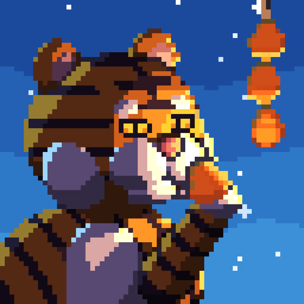
설화던전Seolhwa Dungeon프레스킷Press Kit
한국 옛이야기를 담은 턴제 로그라이크 RPG. 저승사자, 구미호, 도깨비가 원래 이야기 그대로 게임 규칙이 됩니다.A turn-based roguelike RPG built from Korean folktales. The grim reaper, the gumiho and the dokkaebi play by the rules of their original stories.
트레일러Trailer
한눈에At a glance
- 개발Developer
- 성기소프트 (1인 개발, 한국)Sungki Soft (solo developer, South Korea)
- 출시Release
- 2026년 10월 · iOS, AndroidOctober 2026 · iOS, Android
- 장르Genre
- 턴제 로그라이크 RPG (영구 죽음, 판마다 새 던전)Turn-based roguelike RPG (permadeath, new dungeon every run)
- 가격Price
- 무료 · 인앱 상품 하나(설화 전집) · 부활 광고는 고를 때만Free · one in-app purchase · optional revive ad only
- 언어Languages
- 한국어, 영어Korean, English
- 분량Content
- 종족 14 × 직업 12, 신 8, 던전 4 + 저승, 서브 던전 7, 요괴 2백여 종14 species × 12 classes, 8 gods, 4 dungeons + the underworld, 7 side dungeons, 200+ creatures
어떤 게임인가About the game
어릴 때 즐기던 PC 로그라이크 '던전 크롤 스톤 수프'를 폰에서 편하게 하고 싶어 혼자 만들었습니다. 세로 화면에서 한 손으로 하는 정통 로그라이크이고, 인터넷 없이도 됩니다.I grew up on Dungeon Crawl Stone Soup and wanted something like it that felt good on a phone, so I made one. It's a classic roguelike played one-handed in portrait, fully offline.
배경은 한국 옛이야기입니다. 요괴는 장식이 아니라 원래 이야기대로 움직이고, 만난 요괴마다 원래 설화가 도감에 남습니다.The setting is Korean folklore. The creatures aren't decoration: they behave the way their stories say, and every one you meet goes into an in-game codex with its original tale.
- 손돌 — 고려 임금의 의심을 받아 목숨을 잃은 뱃사공. 해마다 늦가을이면 손돌바람이 분다는 이야기 그대로, 바람으로 플레이어를 밀어 넘어뜨립니다.Sondol — a boatman executed on a king's suspicion, whose grudge is said to bring a bitter wind every late autumn. In the game, his wind knocks you back and off your feet.
- 가위 귀신 — 자는 사람 가슴에 올라타 숨을 막는 귀신. 벽을 지나 다가와 가위눌림을 걸면 도술도 재주도 못 씁니다.Gawi ghost — the ghost of sleep paralysis that sits on your chest. It drifts through walls, and while it pins you, you can't cast or use skills.
- 창귀 — 범에게 물려 죽어 다음 사람을 범 앞에 데려가야 풀려나는 넋. 보이지 않는 곳에서 아는 사람 목소리로 부릅니다.Changgwi — the ghost of a tiger's victim, freed only by leading the next person to the tiger. It calls to you from out of sight in a familiar voice.
장면 모음Scenes
영상에 자유롭게 쓰세요. GIF는 미리보기와 게시판용, MP4는 1920×1080 무음 원본입니다. 모두 실제 게임 화면입니다.Use these freely. GIFs are for previews and posts, MP4s are 1920×1080 silent originals. All footage is real gameplay.
보스전Boss fights
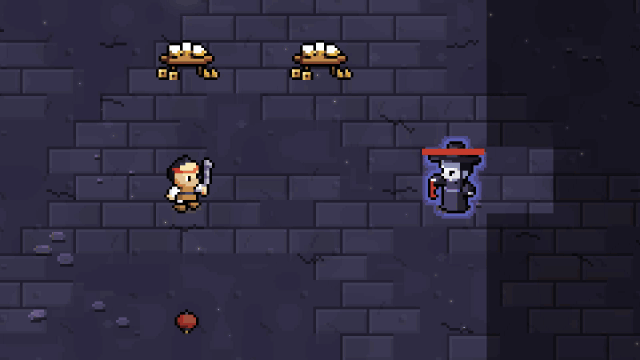
저승사자 — 이름을 세 번 부르면Jeoseung Saja, the Grim Reaper
눈에 띄는 동안 턴마다 이름을 한 번씩 부르고, 세 번째에 목숨을 거둡니다. 방어도 회피도 소용없고, 시야를 벗어나야 셈이 처음으로 돌아갑니다.He calls your name once for every turn he can see you, and the third call kills. Armor and dodging don't help. Break line of sight and the count resets.

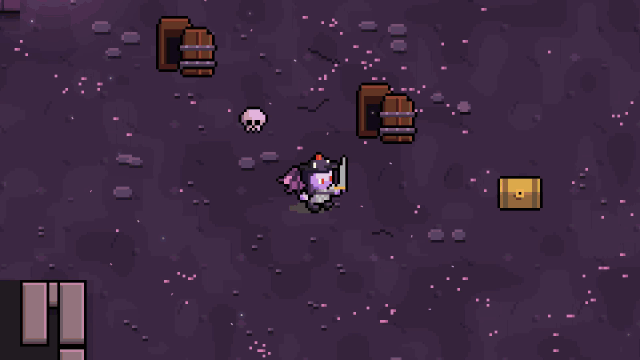
구미호 — 넷 중 진짜는 하나Gumiho, the Nine-Tailed Fox
체력이 절반 아래로 떨어지면 꼬리가 갈라져 똑같은 구미호 넷이 섭니다. 가짜를 치면 눈이 마주쳐 홀립니다.At half health she splits into four identical foxes. Only one is real, and hitting a fake gets you charmed.


이무기 — 싸움이 길어지면 용이 된다Imugi, the Serpent Who Would Be a Dragon
열 턴마다 자라다가 세 번째에 용이 되어 숨을 뿜습니다. 체력이 절반이면 층 전체를 물에 잠급니다.It grows every ten turns, and on the third growth it becomes a dragon and breathes fire. At half health it floods the whole floor.
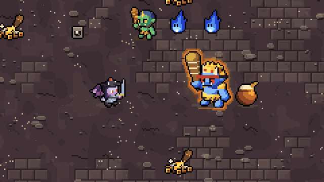
도깨비 대왕 — 은광의 마지막 보스The Dokkaebi King
도깨비불을 부르고, 불길을 뿜고, 씨름으로 집어던집니다. 체력이 절반이면 방망이로 플레이어를 다람쥐로 만듭니다.He summons goblin fire, breathes flame and throws you in a wrestling hold. At half health his club turns you into a squirrel.

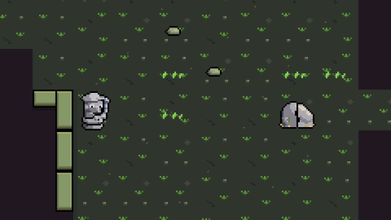
아기장수 우투리 — 바위가 갈라지면Uturi, the Child Hero
지리산 끝 층, 바위에 다가가면 바위가 갈라지며 우투리가 나옵니다. 체력이 줄면 겨드랑이의 날개가 돋아 치고 빠집니다.On the last floor of Mt. Jiri, a boulder splits open as you approach. When he's hurt, the wings under his arms unfold.

설화 속 장면Folktale moments
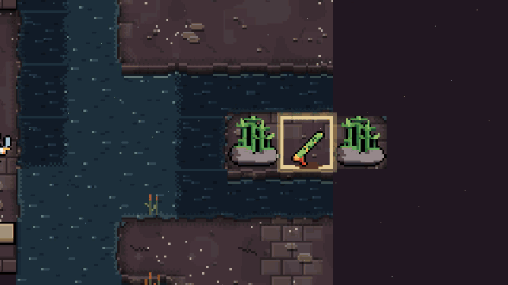
대왕암 — 물이 빠지는 때Daewangam Rock
물이 빠지는 때를 기다려 바위섬까지 걸어가 만파식적을 얻습니다. 불면 물가의 적들이 모두 잠듭니다.Wait for low tide, walk out to the rock and take the flute Manpasikjeok. Play it and everything near the water falls asleep.

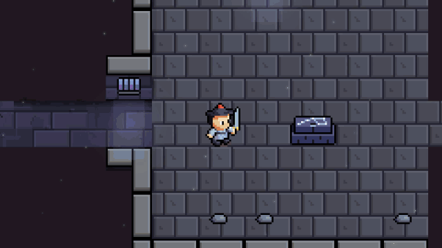
열박산 석굴 — 김유신의 보검Kim Yu-sin's Sword
제단에 칼을 꽂고, 몰려드는 것들 사이에서 빈손으로 버티면 김유신의 보검이 손에 들어옵니다.Plant a blade on the altar and hold out bare-handed against what comes for you. Survive, and the sword is yours.

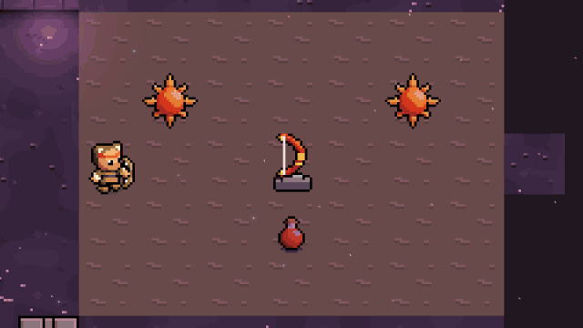
해가 둘 뜬 마당 — 대별왕의 활The Yard of Two Suns
볕에 타며 걸어가 큰 활로 해 하나를 쏘아 떨어뜨립니다. 제주 천지왕본풀이의 대별왕 이야기입니다.Walk through the scorching light and shoot one of the suns down with a great bow, as Daebyeolwang did in the Jeju creation myth.

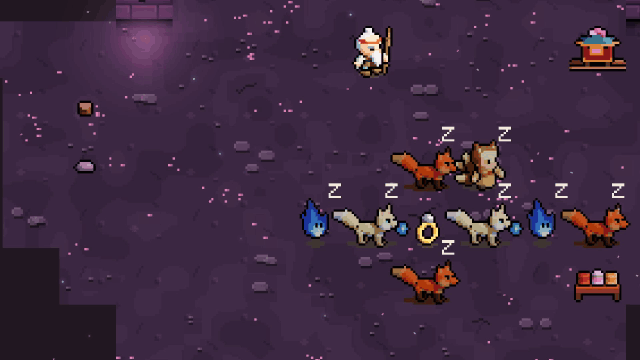
여우 혼례 행렬Fox Wedding Procession
던전 한 방에서 잠든 여우들의 혼례 행렬을 만납니다. 깨우지 않고 지나갈지는 플레이어 몫입니다.A fox wedding procession sleeps in one of the rooms. Whether you sneak past is up to you.

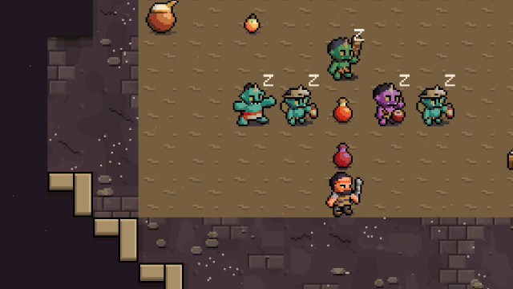
도깨비 난장Dokkaebi Carnival
도깨비들이 벌이는 난장판입니다. 잔치가 끝나 잠든 사이를 지나갑니다.A goblin party that has partied itself to sleep. Walk through quietly.

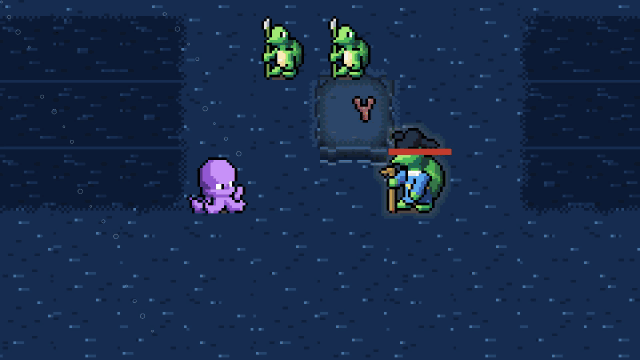
별주부전 — 용궁The Dragon Palace
용궁 서브 던전에서 별주부를 만나고 갇힌 토끼를 풀어 줄 수 있습니다.In the Dragon Palace side dungeon you meet the turtle Byeoljubu and can free the captive rabbit.

신Gods
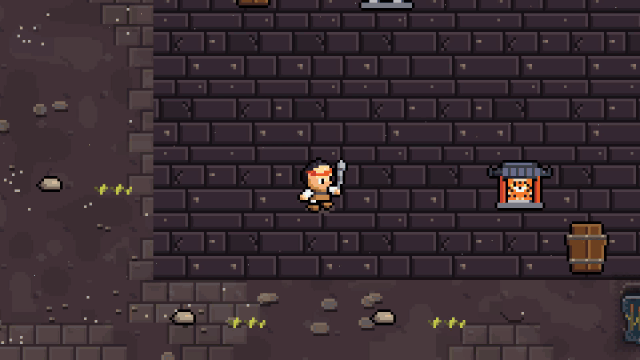
신 모시기Serving a God
신당에서 산신, 용왕, 삼신할미 등 여덟 신 가운데 하나를 모십니다. 신마다 은혜와 함께 지켜야 할 금기가 있습니다.At a shrine you can serve one of eight gods from Korean folk religion. Each brings blessings and a taboo.

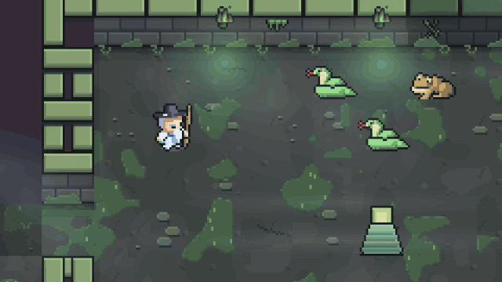
용왕의 비The Dragon King's Rain
용왕을 모시면 비를 불러 불을 끄고 적을 묶습니다.Serve the Dragon King and you can call down rain that puts out fires and slows enemies.

보물Treasures

재주와 도술Skills and spells
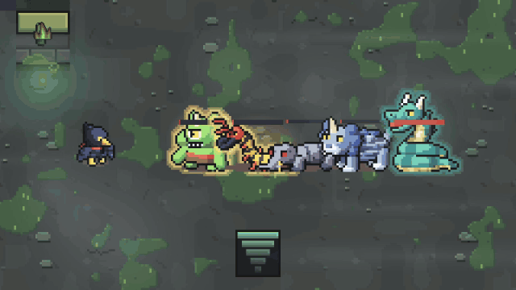
까마귀 무사 — 달려 베기Crow Warrior: Dash Strike
까마귀 종족 무사가 한 줄로 선 적들을 달려 베기로 꿰뚫습니다. 종족 14 × 직업 12, 168가지 조합이 있습니다.A crow-folk warrior cuts through a line of enemies. There are 14 species and 12 classes, 168 combinations.

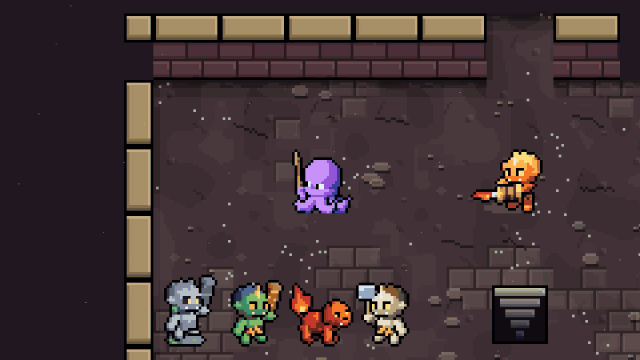
도술 — 해일Spell: Tidal Wave
물 도술 해일이 적들을 쓸어 갑니다. 학파마다 다른 도술이 있습니다.A tidal wave sweeps the room. Each school of magic has its own spells.

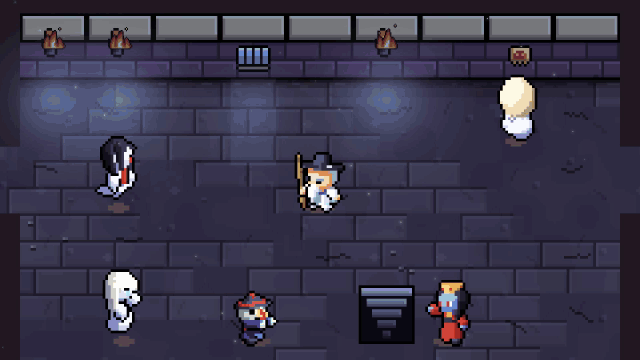
도술 — 저승문Spell: Gate of the Underworld
저승문을 열어 적을 저승으로 끌고 갑니다.Open a gate to the underworld and drag enemies through it.

스크린샷Screenshots


아이콘·키아트Icon and key art


크리에이터께For creators
영상 수익 창출을 포함해 이 게임을 다룬 영상은 자유롭게 만드셔도 됩니다. 이 페이지의 GIF, 영상, 그림도 마음껏 쓰세요.You're welcome to make and monetize videos of the game, and to use any GIF, clip or image on this page.
유료 상품(설화 전집)을 여는 코드가 필요하시면 메일로 말씀해 주세요. 바로 보내 드립니다.If you'd like a code that unlocks the in-app purchase, just email me and I'll send one right away.
코드의 기초 뼈대와 디자인에 AI 도구의 도움을 받았습니다. 기획, 설화 조사, 밸런스는 직접 했습니다.AI tools helped with the base code structure and the art. The design, folklore research and balance are my own.
연락Contact: opop4615@gmail.com · 디스코드Discord: discord.gg/S8vNAkQ6rc